Unofficial study solution; not an official GTU answer key. Answers have not been independently verified. English text reflows; source equations, diagrams and Gujarati retain their original appearance. Use Enlarge image to inspect them.
આ બિનસત્તાવાર અભ્યાસ ઉકેલ છે, સત્તાવાર GTU જવાબવહી નથી. PDF માંથી ગુજરાતી લખાણ સાચું નીકળતું નથી, તેથી દરેક જવાબ મૂળ ચિત્રરૂપે જાળવ્યો છે. વાંચવા માટે ચિત્ર મોટું કરો. મૂળ પ્રશ્ન અને પરીક્ષાના વિકલ્પોની સૂચનાઓ અનુસરો.
Coverage: all five questions and all printed OR alternatives are solved: 28 parts. The authentic English question is retained in both language views; answers are in English and Gujarati.
Printed instructions: attempt all questions; make suitable assumptions; figures on the right indicate full marks; simple and non-programmable scientific calculators are permitted; the English version is authentic.
Assumptions: derivations state their steady-state, geometry and boundary conditions. Winter Q5 OR(c) assumes negligible heat loss and the same stated terminal temperatures for each flow arrangement. Diagrams are schematic.
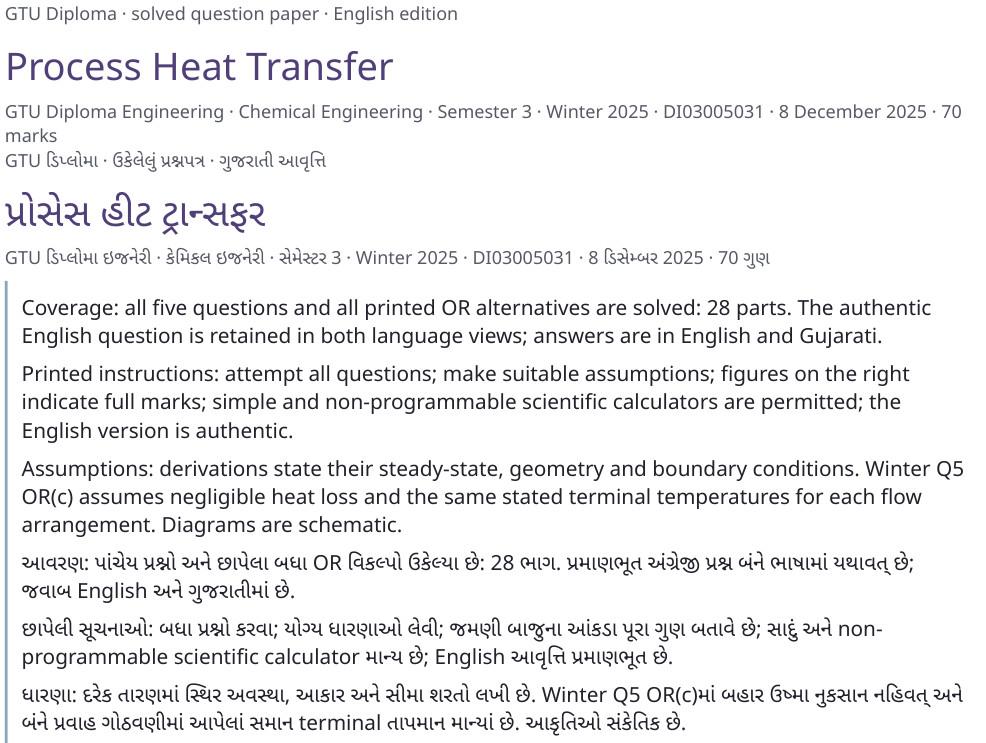
Question 1
Q1 · Process heat transfer and overall coefficient
Q.1 (a) · What is the importance of process heat transfer? · 3 marks
Process heat transfer is the controlled movement of thermal energy between materials at different temperatures.
• It heats feed for reactions, distillation and evaporation and cools products safely.
• Exchangers, condensers and reboilers recover energy, reduce utility use and operating cost.
• Equipment sizing, temperature control and insulation improve product quality, safety and process efficiency.
Example: hot product preheats cold feed in an exchanger.
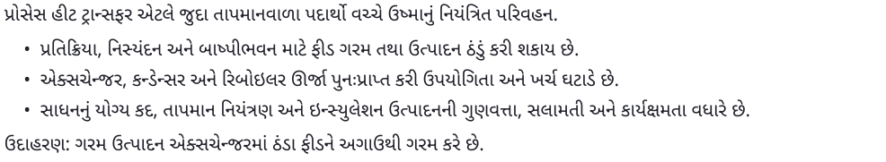
Q.1 (b) · Define steady state and unsteady state heat transfer with examples · 4 marks
![Q.1 (b): preserved source formula, table or diagram, page 3. Extracted text context (formula notation may be incomplete): Basis Steady state Unsteady (transient) state Temperature At any fixed position it does not change with time. At one or more fixed positions it changes with time. Energy storage No net accumulation within a fixed control volume. Thermal energy can accumulate or decrease. Example A wall between maintained constant- temperature fluids after equilibrium. A cold metal bar heating after being placed in a hot bath.](winter-2025.assets/0002.webp)
Steady does not mean uniform: temperature may vary with position even when it is time independent.
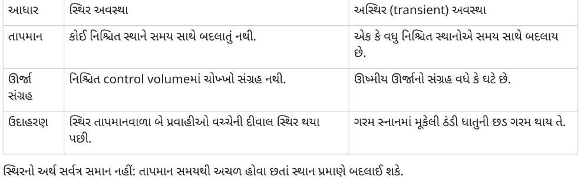
Q.1 (c) · Explain 1-2 shell and tube heat exchanger with neat clean sketch. · 7 marks
Example: one shell pass and two tube passes (1–2 exchanger). The two fluids remain separated by the tube walls.
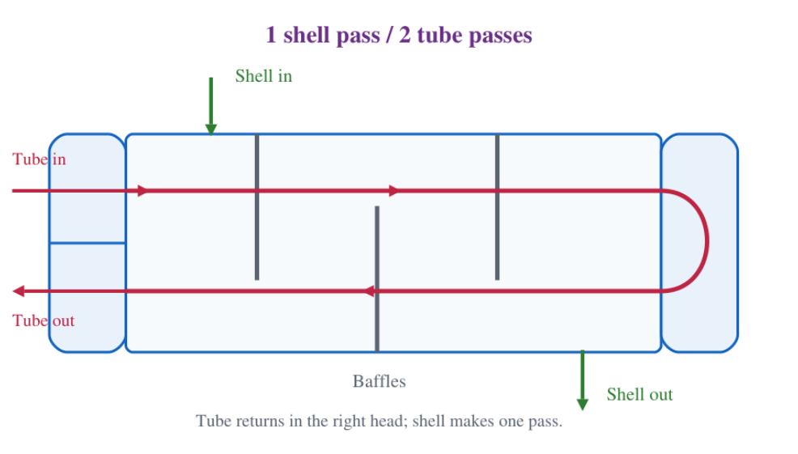
Simplified longitudinal section: red is the tube-side fluid; green is the shell-side fluid.
Construction
• A cylindrical shell contains a bundle of tubes fixed in tube sheets. Channel heads and a partition divide the tube-side flow into two passes.
• Alternating shell-side baffles support the tubes and guide shell fluid across the bundle. Separate nozzles carry each inlet and outlet.
Working
• Tube-side fluid enters the upper pass, flows to the far head, returns through the lower pass and leaves at the inlet end.
• Shell-side fluid enters one nozzle, passes through the shell around the tubes and leaves through its outlet; the baffles increase crossflow and turbulence.
• Heat transfers from the hot fluid through a tube wall to the cold fluid, without intentional mixing. Condensers, coolers and process heaters use such equipment.
One shell pass and two tube passes describe flow paths, not the number of individual tubes. The temperature-driving force may require a multipass LMTD correction factor.


Q.1 (c) · Develop an equation for overall heat transfer coefficient. · OR · 7 marks
Derive the overall coefficient U between hot and cold bulk fluids across a plane wall of thickness L.
• Steady one-dimensional heat flow, equal surface area A, constant k and h; no heat generation, heat loss or contact resistance.
• T1 and T2 are the wall surface temperatures; all resistances are in series.
Derivation, line by line
1. Hot-side film — Q̇ = hh A (Th − T1)
3. Cold-side film — Q̇ = hc A (T2 − Tc)
5. Define the overall coefficient — Q̇ = U A (Th − Tc)
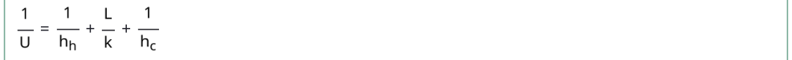
U has units W m⁻² K⁻¹. Fouling adds its area-based resistances; unequal inner and outer areas require a specified area basis. If bulk temperatures vary along an exchanger, use the appropriate mean temperature difference and correction factor.
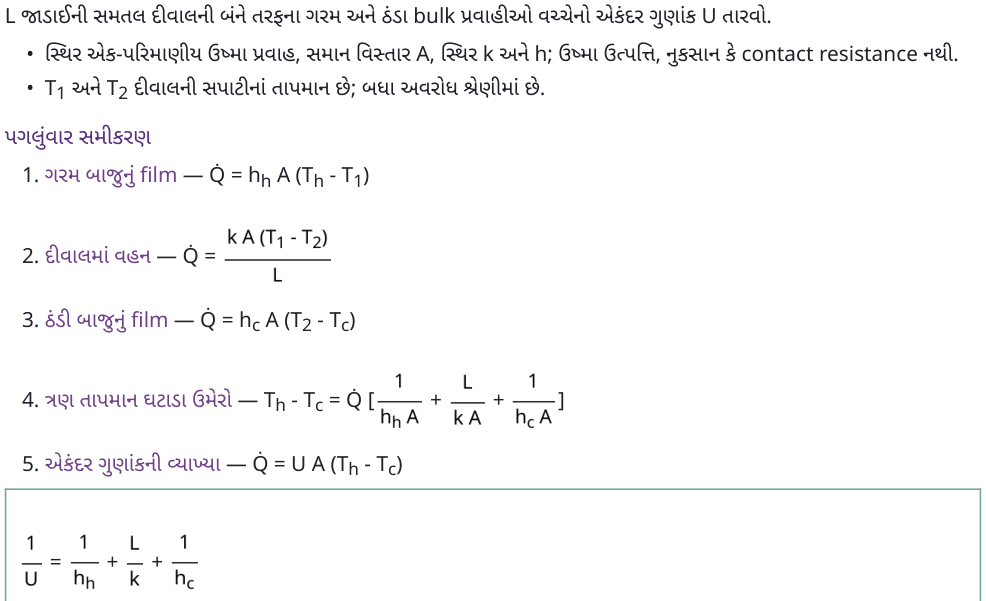
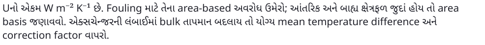
Question 2
Q2 · Conduction, convection and heat-transfer modes
Q.2 (a) · Explain the thermal conductivity of solids and liquids. · 3 marks
Thermal conductivity k measures a material’s ability to conduct heat. In a one-dimensional material
• Solids: energy is transported by lattice vibrations and, in metals, free electrons; metals such as copper generally have high k.
• Liquids: energy passes between moving molecules; their k is usually below that of metals. Water conducts heat better than many oils.
Values depend on material and temperature; exceptions exist, so use measured data for design.
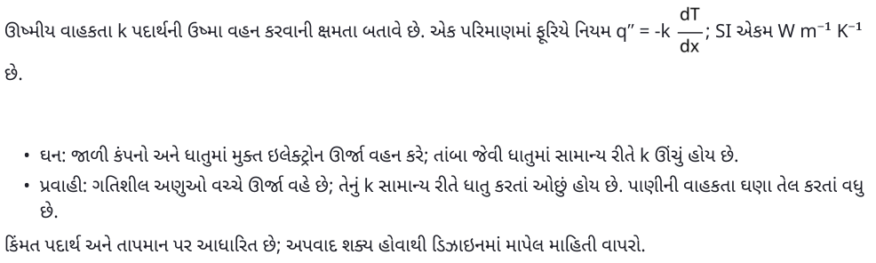
Q.2 (b) · Compare free convection and forced convection. · 4 marks
![Q.2 (b): preserved source formula, table or diagram, page 8. Extracted text context (formula notation may be incomplete): Basis Free (natural) convection Forced convection Cause of fluid motion Buoyancy from density differences due to temperature. External device such as a pump, fan or blower. Power No external device is required to drive this motion. External mechanical power is required. Heat-transfer coefficient Usually lower under otherwise comparable conditions. Usually higher when externally driven flow is strong. Example Still air rising beside a hot pipe. Water pumped through an exchanger.](winter-2025.assets/0014.webp)
Both transfer heat between a surface and a fluid; mixed convection is possible.
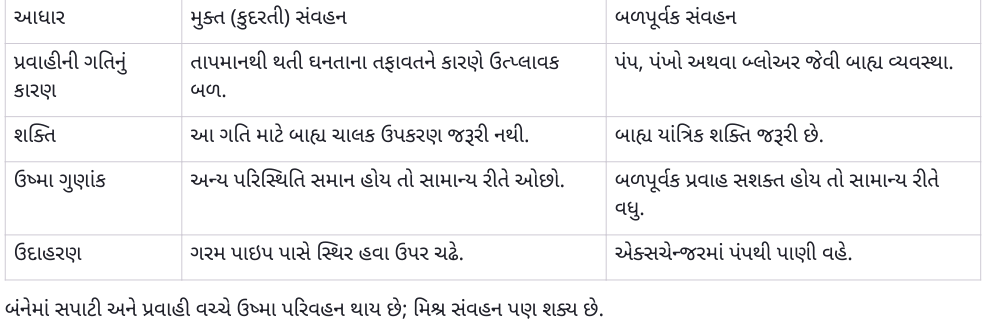
Q.2 (c) · Develop an equation for one dimensional steady state heat conduction through composite plane wall. · 7 marks
Find the steady heat rate through three plane layers in series.
• One-dimensional, steady, no generation; constant k in each layer, perfect contact, common area A and negligible edge loss.
• Let the boundary and interface temperatures be T0, T1, T2, T3; T0 is hotter.
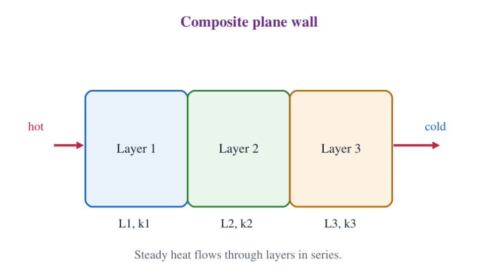
The same steady heat rate crosses every layer.
Derivation

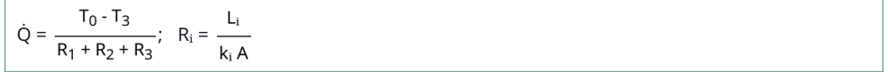
Q̇ is in W and each Rᵢ is in K W⁻¹. Add film and contact resistances if they are not negligible.
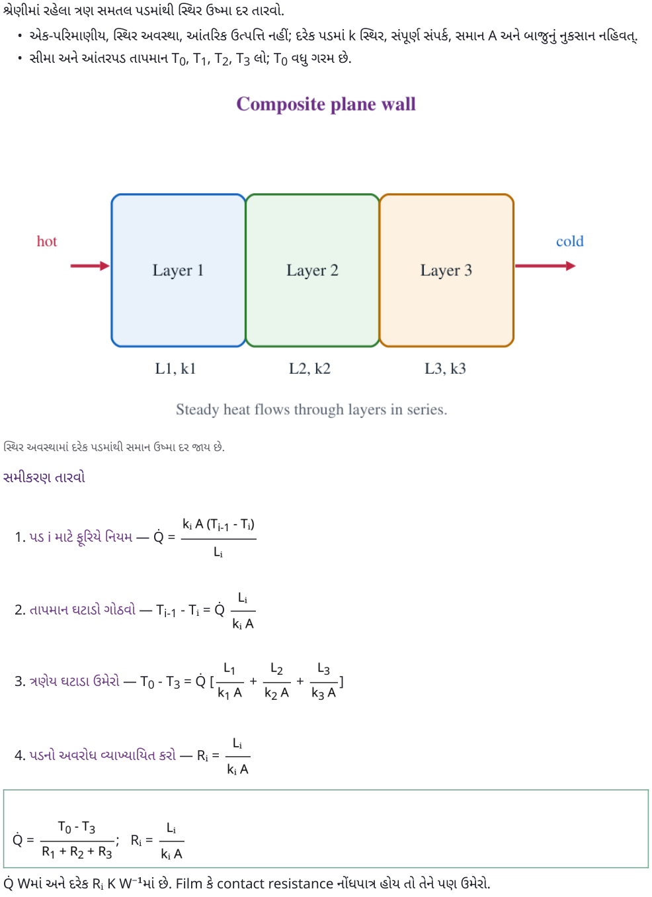
Q.2 (a) · Define absorptivity and reflectivity. · OR · 3 marks
energy.
α + ρ + τ = 1
τ is transmissivity. For an opaque surface τ = 0, so α + ρ = 1. Values can depend on wavelength, direction and surface condition.
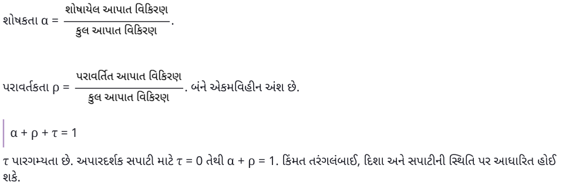
Q.2 (b) · Illustrate the concept of fins. · OR · 4 marks
A fin is an extended surface attached to a base to increase the area exposed to a surrounding fluid.
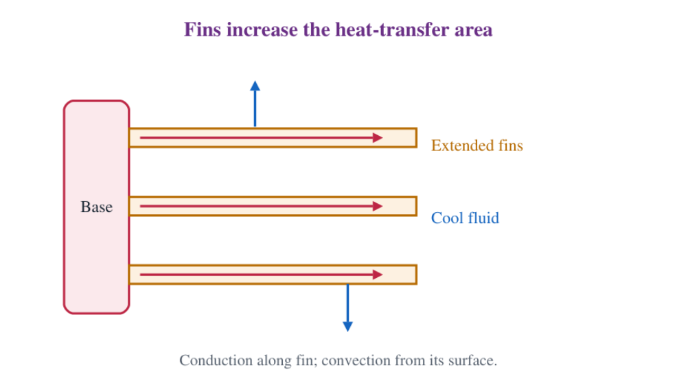
Heat conducts along the fins and convects from their surfaces.
• Fins are especially useful on the side with a low convection coefficient, such as air.
• Use a thermally conductive material and good contact; temperature falls from the base toward the tip.
• Examples include air-cooled engine cylinders and radiator fins.
Fin efficiency compares actual fin heat transfer with the ideal transfer if the whole fin were at base temperature.
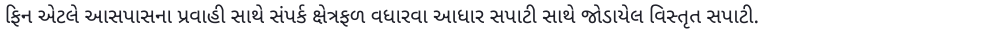
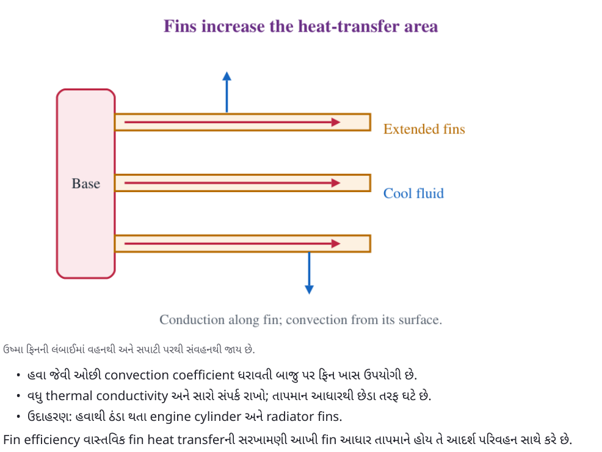
Q.2 (c) · Classify modes of heat transfer. · OR · 7 marks
Classification and examples
![Q.2 (c) OR: preserved source formula, table or diagram, page 14. Extracted text context (formula notation may be incomplete): Mode Mechanism Example Conduction Energy transfer through matter by microscopic interactions, without bulk motion. Heat through a metal wall. Convection Transfer between a surface and moving fluid, combining conduction at the surface with fluid motion. A fan cooling a hot pipe. Radiation Transfer by electromagnetic waves; no material medium is required. Heat from the sun reaching Earth.](winter-2025.assets/0029.webp)
Governing laws
decreasing temperature.
Newton’s law of cooling, convection: Q̇ = h A (Ts − T∞). h is the surface heat-transfer coefficient; T∞ is the bulk fluid temperature.
Stefan–Boltzmann law, blackbody emission: Eb = σ T⁴. For a real surface E = ε σ T⁴ with total hemispherical ε.
q″ is heat flux in W m⁻², Q̇ is heat-transfer rate in W, A is area in m², k is in W m⁻¹ K⁻¹, h is in W m⁻² K⁻¹ and σ = 5.670 × 10⁻⁸ W m⁻² K⁻⁴. Radiation temperatures are absolute.
A real exchanger may involve all three modes at once; heat flows spontaneously from higher to lower temperature.
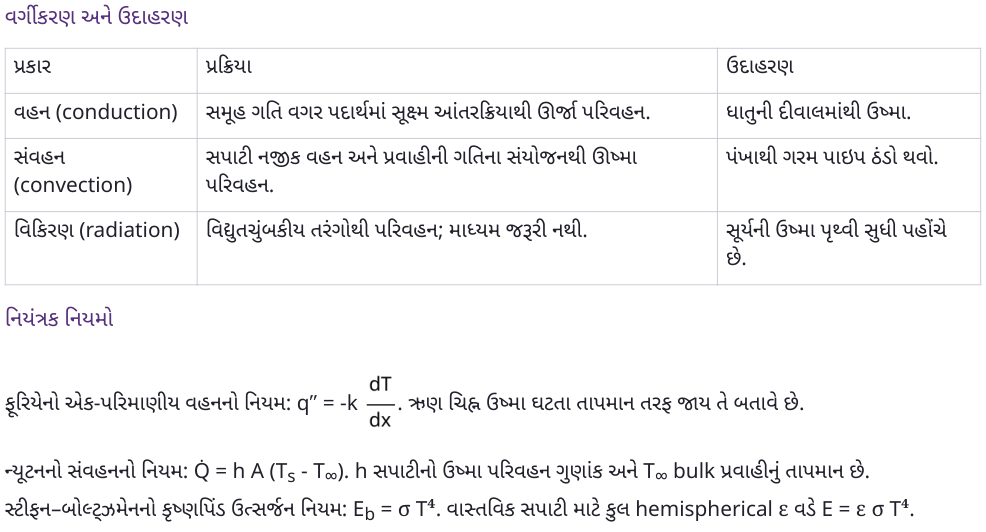
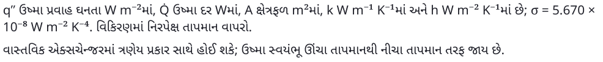
Question 3
Q3 · Radiation, condensation and cylindrical conduction
Q.3 (a) · Explain the concept of black body. · 3 marks
A blackbody is an ideal surface that absorbs all incident radiation at every wavelength and direction: α = 1, with no reflection or transmission.
At a given temperature it emits the maximum possible radiation for an equilibrium surface: ε = 1 and Eb = σT⁴. A small hole in a heated cavity approximates a blackbody.
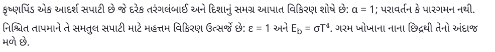
Q.3 (b) · Compare drop wise and film wise condensation. · 4 marks
![Q.3 (b): preserved source formula, table or diagram, page 16. Extracted text context (formula notation may be incomplete): Basis Dropwise condensation Filmwise condensation Surface wetting Condensate forms separate droplets on a poorly wetted surface. Condensate wets the surface and forms a continuous liquid film. Resistance Much bare surface is exposed; liquid resistance is generally lower. Liquid film adds thermal resistance. Heat transfer Normally much higher coefficient under comparable conditions. Normally lower coefficient. Practical behavior Droplets grow and fall; durable promoters are difficult to maintain. Film drains continuously; common on clean wettable surfaces.](winter-2025.assets/0034.webp)
Both release latent heat when vapour condenses; non-condensable gases and surface condition affect performance.
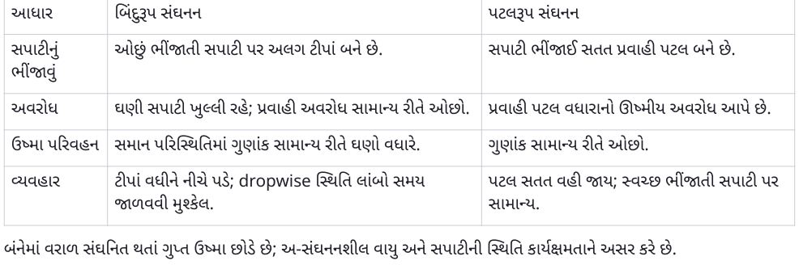
Q.3 (c) · Develop an equation for one dimensional steady state heat conduction through a cylinder. · 7 marks
Derive steady radial conduction through a cylindrical wall, inner radius r₁ and outer radius r₂, length L.
• Constant k, one-dimensional radial flow, no heat generation or end loss, fixed boundary temperatures T₁ > T₂.

Cross-section of the cylindrical wall; the area increases with radius.
Derivation
1. Radial area — Ar = 2πrL
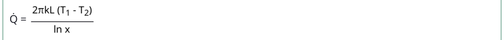
Rcyl is in K W⁻¹, and ln denotes natural logarithm. Add surface-film resistances if present.
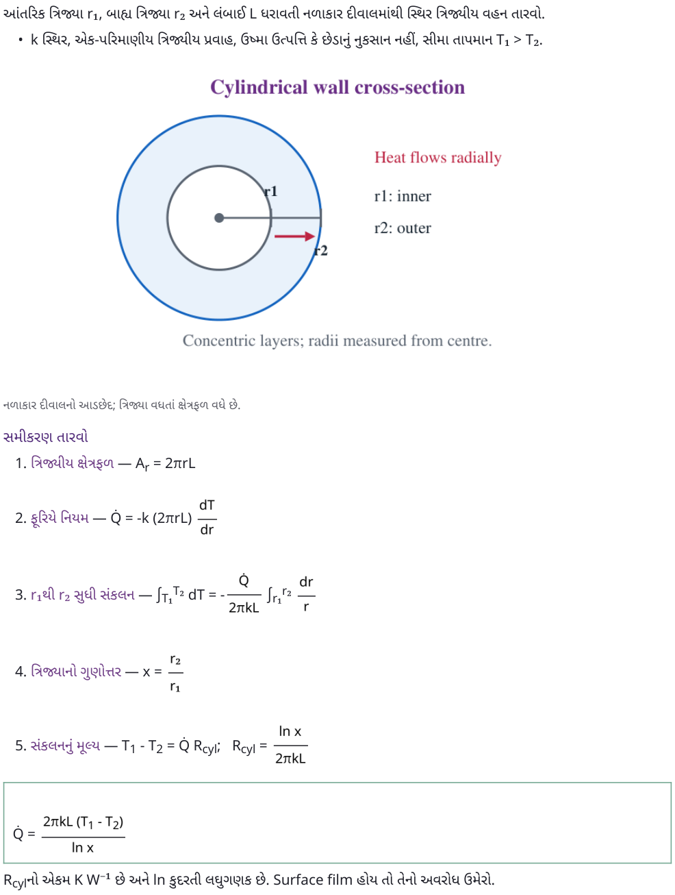
Q.3 (a) · What is Newton’s law of convective heat transfer? · OR · 3 marks
Newton’s law of cooling states that the convective heat rate is proportional to exposed area and the temperature difference between a surface and the bulk fluid.
Q̇ = h A (Ts − T∞)
h is the convection coefficient (W m⁻² K⁻¹), A the area (m²), and temperatures are in K or °C differences. If Ts is higher, Q̇ is heat loss from the surface. h depends on fluid, flow and geometry.

Q.3 (b) · Define Gray body and Emissivity with suitable example. · OR · 4 marks
Gray body: an idealisation whose spectral emissivity is independent of wavelength over the range of interest at a given temperature; it is generally less than 1. A real oxidised surface may be approximated as gray over a limited range.
temperature, with the same spectral and directional basis. For total hemispherical emission, E =
εσT⁴.
Example: if E = 0.8 Eb, ε = 0.8. Both values are dimensionless.
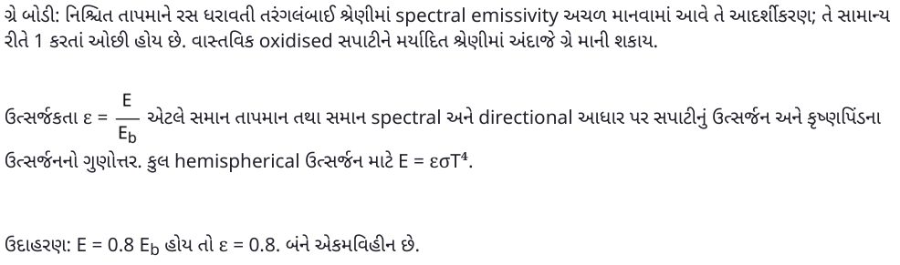
Q.3 (c) · Build an equation for critical radius of insulation. · OR · 7 marks
For a cylindrical pipe insulated from radius r₁ to r₂, find the outer radius giving maximum heat loss.
• Steady radial flow, constant insulation k and external h, fixed pipe surface T₁ and ambient T∞; no heat generation or radiation. L and r₁ are fixed.

Insulation between radii r₁ and r₂; convection occurs at the outer surface.
Derivation


k is in W m⁻¹ K⁻¹, h in W m⁻² K⁻¹, so the critical radius is in m. The derivative changes from negative
to positive at this radius, so resistance is minimum and heat loss maximum. For r₂ > rcritical, further insulation lowers heat loss.
If the initial radius r₁ is below the critical radius, adding insulation can initially increase heat loss. If
r₁ is already at or above it, additional insulation reduces heat loss. For the analogous spherical shell

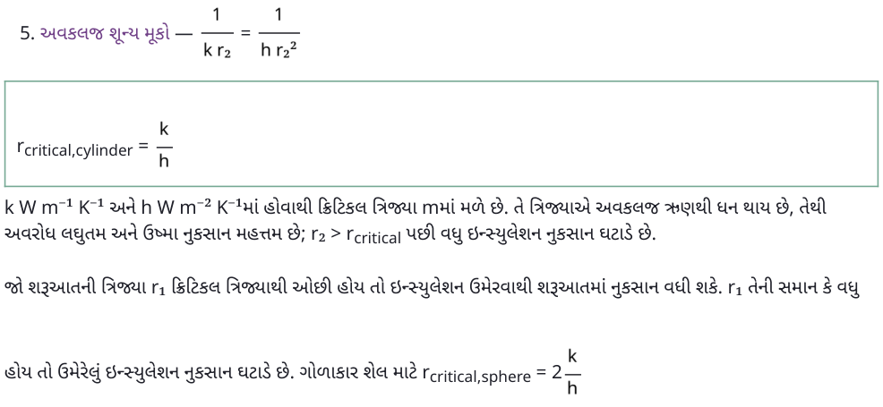
Question 4
Q4 · Boiling-point elevation and heat exchangers
Q.4 (a) · Show the sketch of boiling point elevation. · 3 marks
At a fixed pressure a solution containing a nonvolatile solute generally boils above the saturation temperature of the pure solvent.
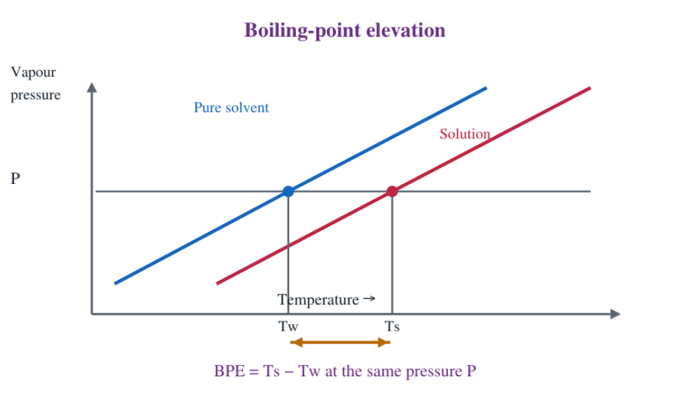
At the same pressure P, the solution reaches its boiling point Ts above the pure solvent point Tw.
BPE = Ts − Tw
The elevation reduces the available temperature difference for evaporator heat transfer.
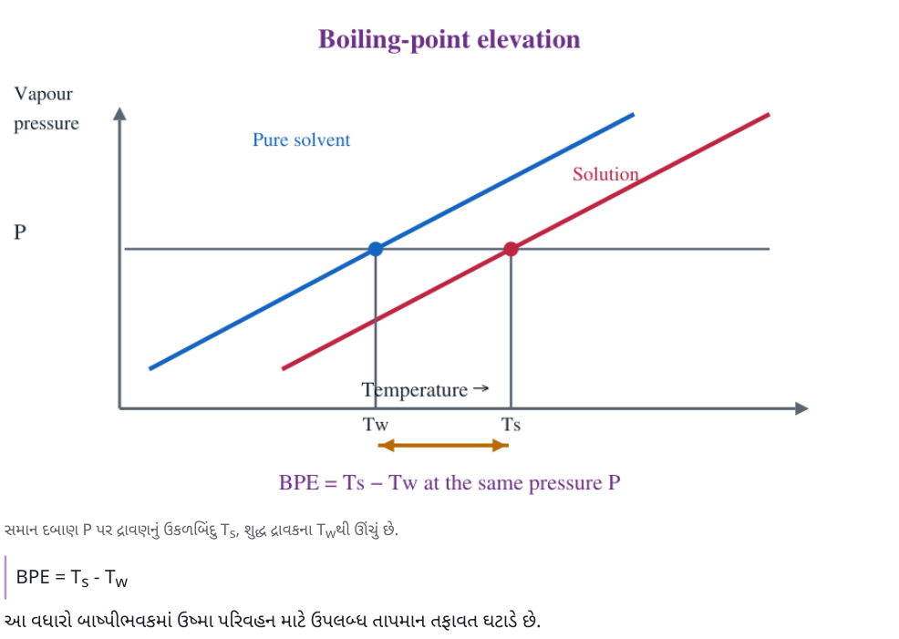
Q.4 (b) · Explain Duhring's rule and its importance. · 4 marks
Dühring’s rule: for a solution of fixed composition, its boiling temperature plotted against the boiling temperature of a reference pure solvent at the same pressure is approximately a straight line over a useful range of pressures.

Each concentration has its own approximate line; vertical separation from the pure-solvent line gives BPE at the same pressure.
Use a known solvent boiling point at the operating pressure to estimate the solution boiling point and boiling-point elevation. This assists evaporator temperature-driving-force and area calculations.
The rule is empirical: use data for the correct solute concentration and pressure range; appreciable deviations can occur.
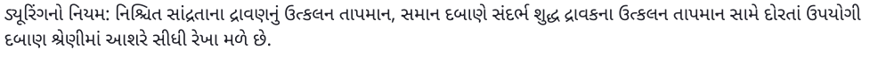

Q.4 (c) · Explain types of heat exchanger based on function, flow pattern and construction. · 7 marks
Heat exchangers can be classified on several independent bases:
![Q.4 (c): preserved source formula, table or diagram, page 27. Extracted text context (formula notation may be incomplete): Basis Types and purpose Function Heater or cooler changes fluid temperature; condenser changes vapour to liquid; evaporator or reboiler vaporises liquid. Flow pattern Parallel flow: both fluids enter the same end; countercurrent: opposite directions; crossflow: directions approximately perpendicular. Construction Double-pipe: concentric pipes; shell-and-tube: tube bundle in shell; plate: thin plates with alternate channels; spiral: spiral passages. Contact Indirect (surface): wall separates streams; direct contact: suitable fluids contact and exchange heat directly.](winter-2025.assets/0062.webp)
Regenerative exchangers alternatively store and release heat in a matrix. Flow pattern and construction may be combined, for example a countercurrent double-pipe exchanger.
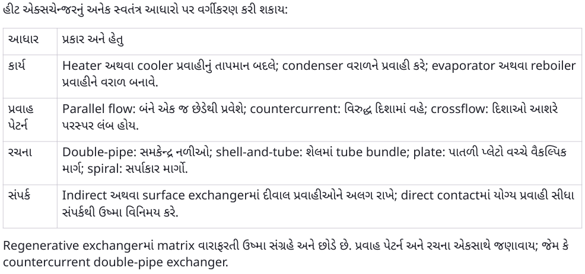
Q.4 (a) · Outline the sketch of double pipe heat exchanger. · OR · 3 marks
A double-pipe exchanger has one pipe inside another. The two fluids flow through the inner tube and the surrounding annulus, separated by the tube wall.
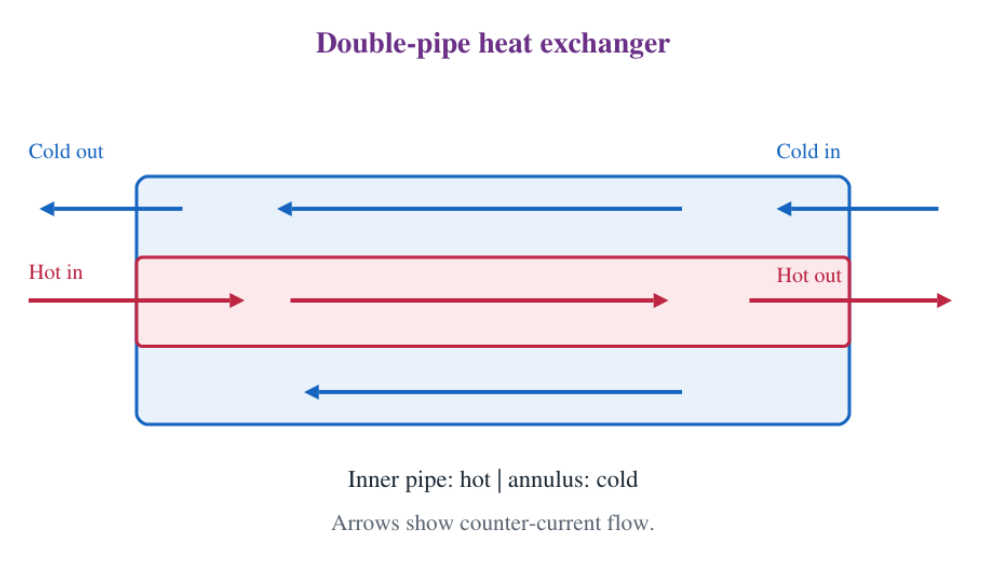
Countercurrent arrangement: the two streams enter at opposite ends.
Heat passes from hot to cold through the inner pipe wall; a parallel-flow arrangement is also possible.
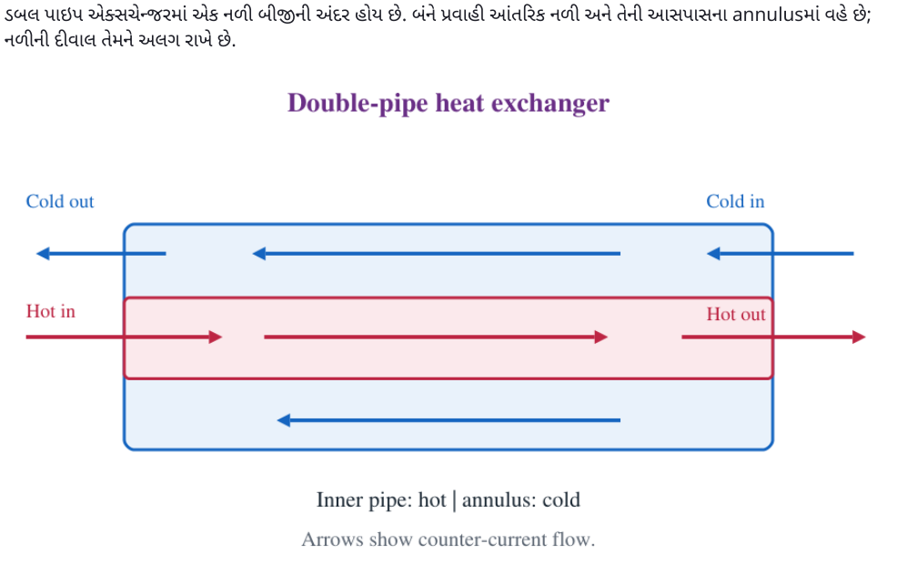
Q.4 (b) · Explain any two characteristics of liquid for evaporation. · OR · 4 marks
Important liquid characteristics for evaporator selection and operation:
• Boiling-point elevation: solute raises solution boiling temperature and reduces the available temperature difference.
• Viscosity: concentrated liquids are often more viscous, reducing circulation and heat transfer.
Q.4 (c) · Build an equation of LMTD for counter current flow. · OR · 7 marks
For countercurrent flow, define terminal temperature differences at the two physical ends of the exchanger.
• Steady, no external heat loss, constant U and fluid heat-capacity rates Ch and Cc; sensible single-phase heating and cooling.
• Both terminal differences are positive. Let dQ̇ be the positive heat rate transferred in a small section, moving along the hot-flow direction.
Derivation
2. Local heat transfer — dQ̇ = U ΔT dA
4. Integrate from end 1 to end 2 — β Q̇ = ΔT2 − ΔT1

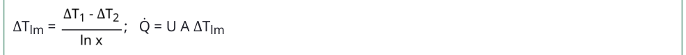
ln denotes natural logarithm. When the two terminal differences are equal (β = 0), the limiting LMTD equals that common difference. For multipass or crossflow equipment a correction factor may be needed.
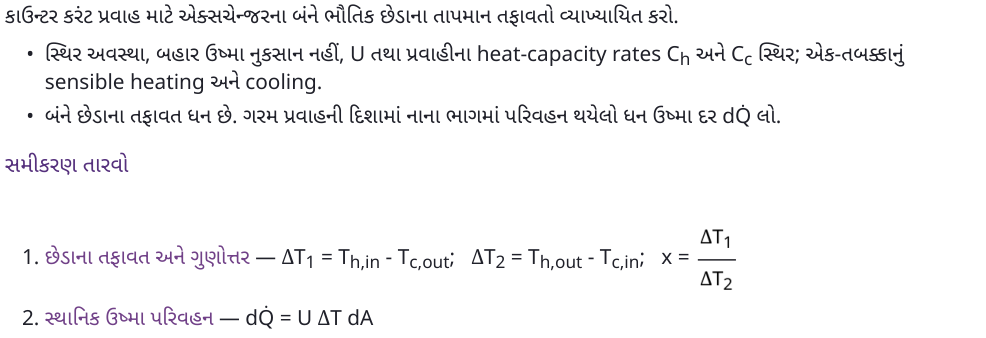
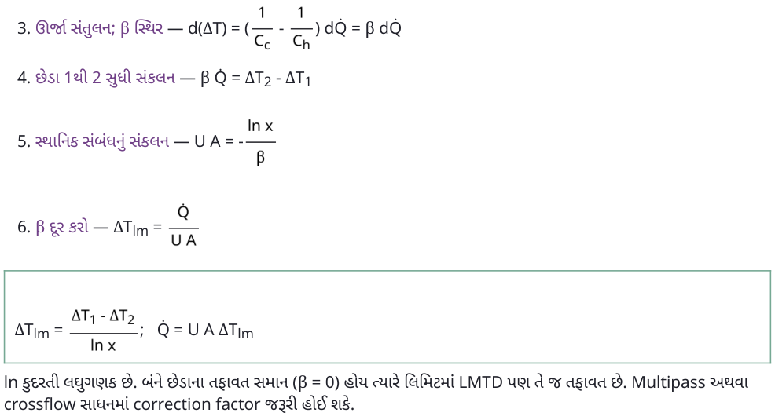
Question 5
Q5 · Radiation, boiling and exchanger design
Q.5 (a) · What is Emissive power and Monochromatic wave length? · 3 marks
Emissive power E is radiant energy emitted per unit surface area per unit time; unit W m⁻².
Monochromatic wavelength λ refers to one wavelength (one spectral component) of radiation, expressed in m or μm. The associated spectral or monochromatic emissive power Eλ is emission per unit area per unit wavelength interval.
E = ∫ Eλ dλ
Eλ may be expressed in W m⁻² μm⁻¹; it is not itself a wavelength.
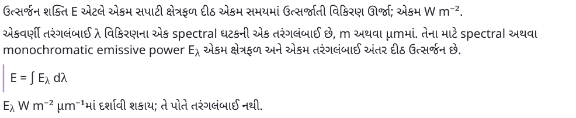
Q.5 (b) · Explain the effect of scale formation on heat exchanger. · 4 marks
Scale is a deposit of salts or other solids on a heat-transfer surface. It adds a fouling resistance between fluid and wall.
Rtotal = Rclean + Rscale
• The overall coefficient U falls; with the same area and temperature driving force the heat duty falls.
• Deposits can narrow flow passages, increasing pressure drop and pumping power; local overheating or under-deposit corrosion may result.
• Treat the feed, control temperature and clean mechanically or chemically as appropriate; allow a fouling resistance in design.
Deposits on either side must be referred to the same area basis when calculating U.
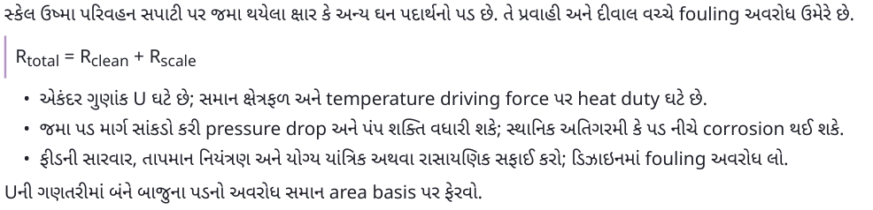
Q.5 (c) · Illustrate regimes of pool boiling. · 7 marks
Pool boiling is boiling from a heated surface in an essentially stationary liquid; motion is produced mainly by buoyancy and bubbles. The boiling curve relates wall heat flux to wall superheat ΔT = Ts − Tsat.
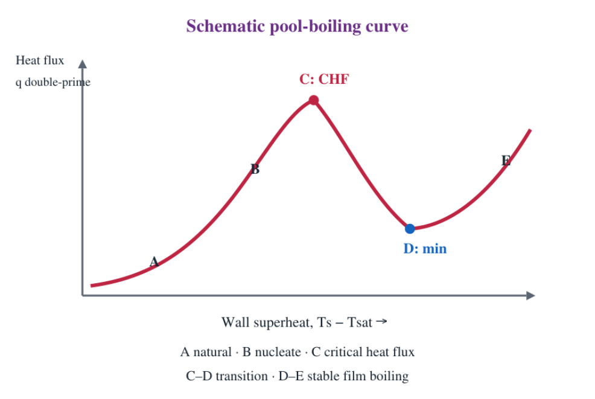
Schematic pool-boiling curve; the labelled regions are described below.
• A — natural convection: at small superheat there is little or no bubble formation; buoyant circulation carries heat.
• B — nucleate boiling: bubbles form at surface sites, grow and detach; agitation gives a rapid rise in heat flux.
• C — critical heat flux (CHF): maximum heat flux on the nucleate branch; excessive heating may cause a sudden wall-temperature rise.
• C to D — transition boiling: unstable vapour patches cover and uncover the surface; heat flux decreases as superheat rises.
• D to E — stable film boiling: a vapour blanket insulates the wall; at very high temperatures radiation contributes and heat flux rises again.
D is the minimum-heat-flux region, associated with the Leidenfrost point. Operating near CHF can damage equipment.


Q.5 (a) · Define Capacity and Economy of evaporator with example. · OR · 3 marks
Evaporator capacity is the mass of solvent evaporated per unit time, commonly kg h⁻¹.
Steam economy is the mass of solvent evaporated per mass of heating steam supplied:

Example: 1000 kg water evaporated in 1 h with 500 kg steam gives capacity 1000 kg h⁻¹ and economy 2 kg water per kg steam. A multiple-effect arrangement can achieve such an economy.

Q.5 (b) · Recall Kirchoff’s Law and Stefan Boltzmann Law. · OR · 4 marks
Kirchhoff’s law: at thermal equilibrium, spectral directional emissivity equals absorptivity at the same wavelength, direction and temperature: ελ,θ = αλ,θ. Total ε = α requires matching spectral and angular weighting, for example blackbody irradiation at the same temperature.
Stefan–Boltzmann law: total blackbody emissive power Eb = σT⁴. A real surface emits E = εσT⁴ using total hemispherical emissivity.
T is in kelvin; σ = 5.670 × 10⁻⁸ W m⁻² K⁻⁴. These are emission laws, not automatically the net exchange with arbitrary surroundings.
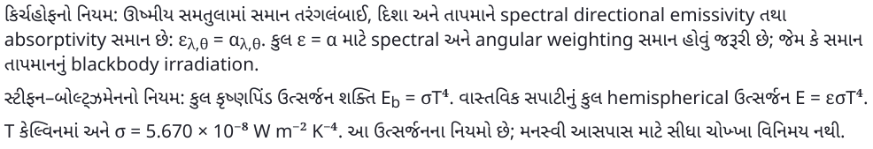
Q.5 (c) · Hot oil is at a rate of 1.2 kg/s flows through a double pipe heat exchanger. It enters at 633 K and leaves 573 K. The cold fluid enters at 303 K and leaves at 400 K. If overall heat transfer co-efficient is 500 W/m2K, Calculate the heat transfer area for (i) Parallel flow and (ii) counter current flow. The Cp of hot oil is 2083 J/kg.K · OR · 7 marks
Given
ṁh = 1.2 kg s⁻¹
cp,h = 2083 J kg⁻¹ K⁻¹
Th,in = 633 K
Th,out = 573 K
Tc,in = 303 K
Tc,out = 400 K
U = 500 W m⁻² K⁻¹
Assume steady operation, negligible external heat loss, constant U and heat capacities, and the stated terminal temperatures in each flow arrangement. This is a simple double-pipe exchanger, so no multipass correction factor is applied.
Heat duty from hot oil
1. Formula — Q̇ = ṁh cp,h (Th,in − Th,out)
2. Substitute — Q̇ = 1.2 kg s⁻¹ × 2083 J kg⁻¹ K⁻¹ × (633 − 573) K
3. Calculate — Q̇ = 149,976 W = 149.976 kW
(i) Parallel flow
1. ΔT1 = Th,in − Tc,in = (633 − 303) K = 330 K
2. ΔT2 = Th,out − Tc,out = (573 − 400) K = 173 K
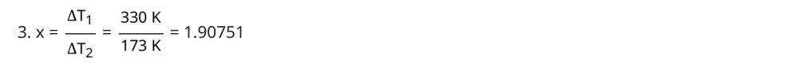
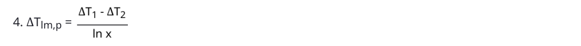
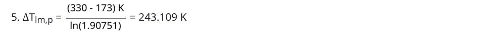
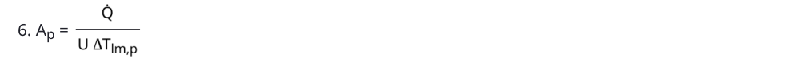
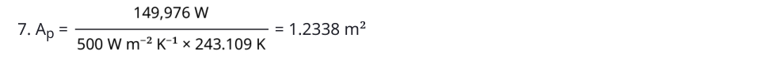
(ii) Countercurrent flow
1. ΔT1 = Th,in − Tc,out = (633 − 400) K = 233 K
2. ΔT2 = Th,out − Tc,in = (573 − 303) K = 270 K
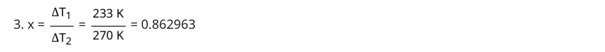
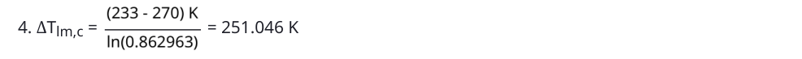
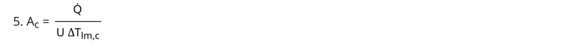
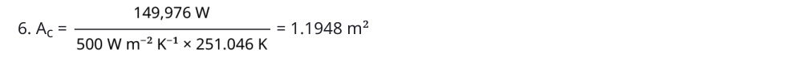
Parallel area = 1.234 m²; countercurrent area = 1.195 m².
• Both end temperature differences are positive, so the specified terminal temperatures are feasible.
• Countercurrent LMTD is higher for these terminals, so its required area is smaller. ln is the natural logarithm.
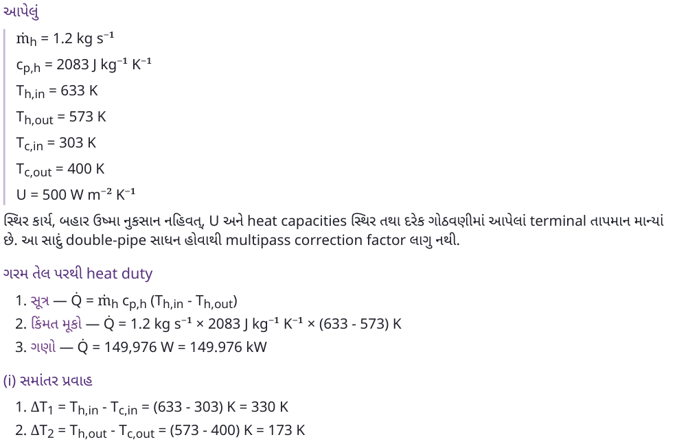
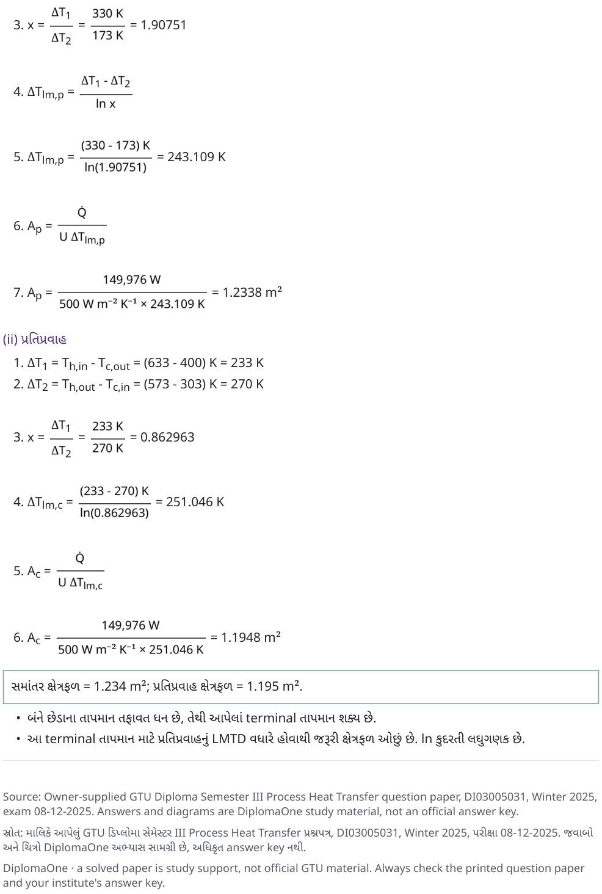